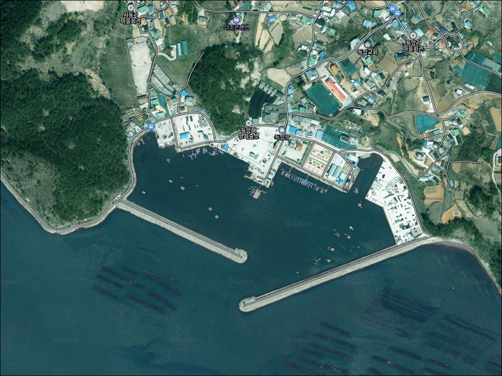
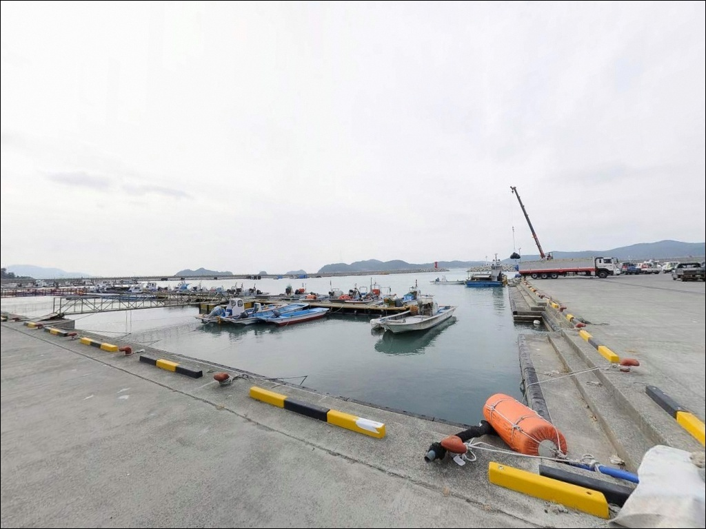
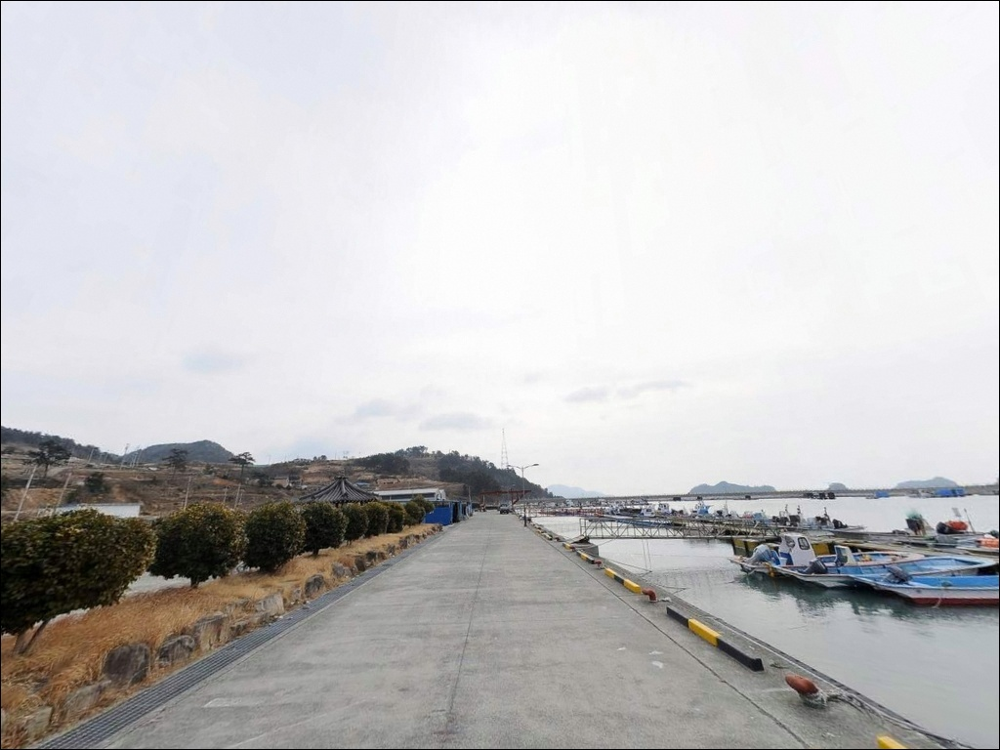
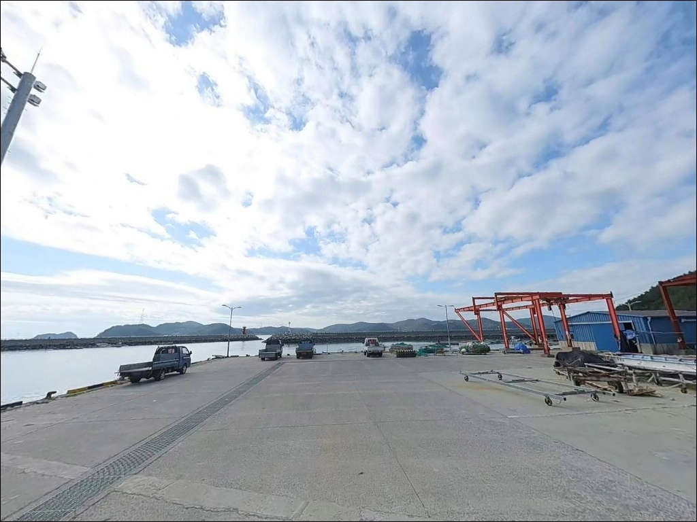
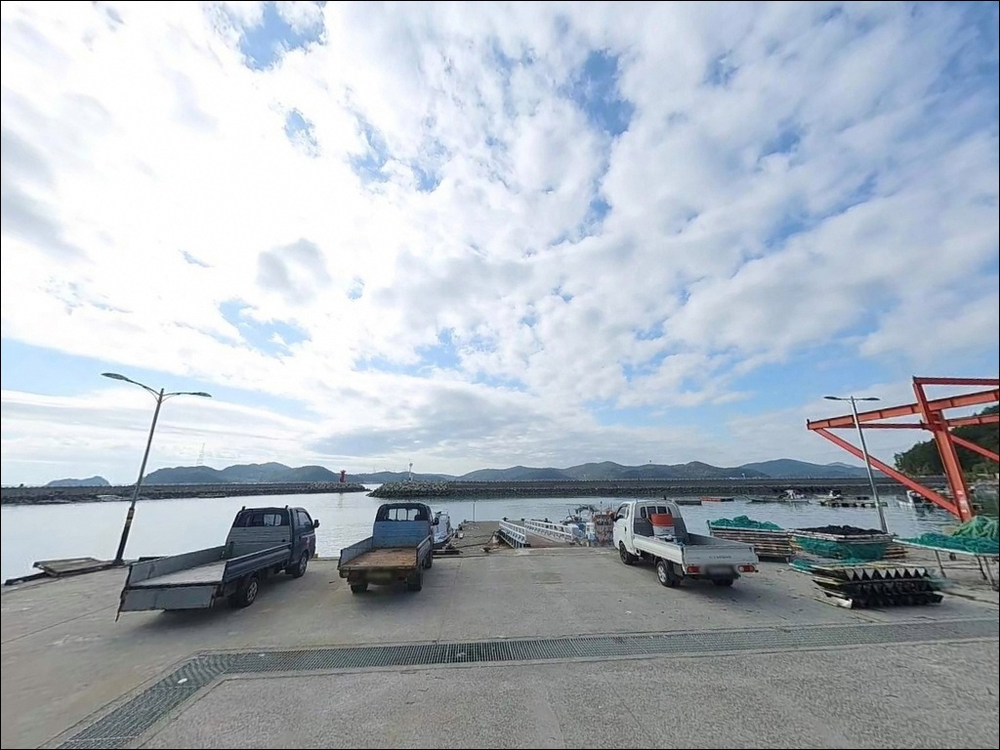
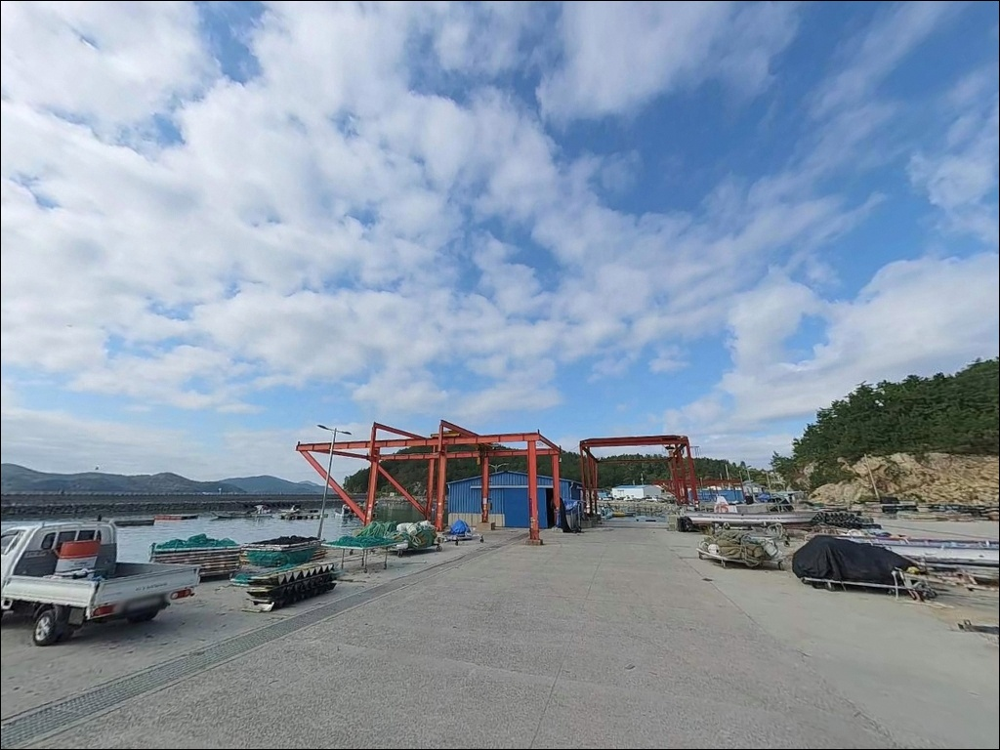
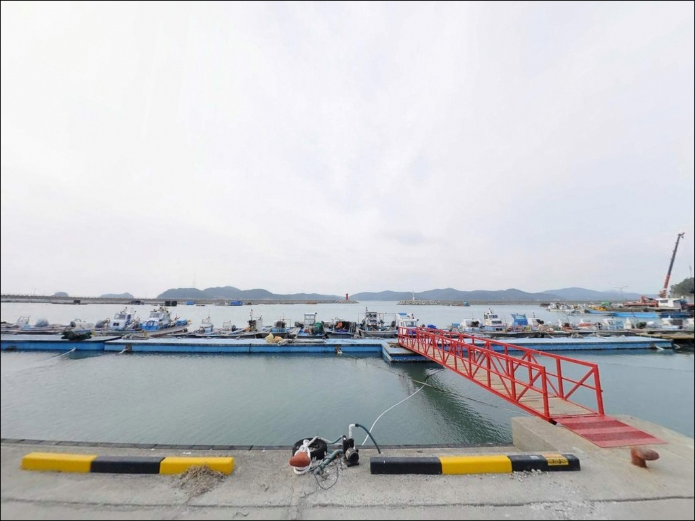
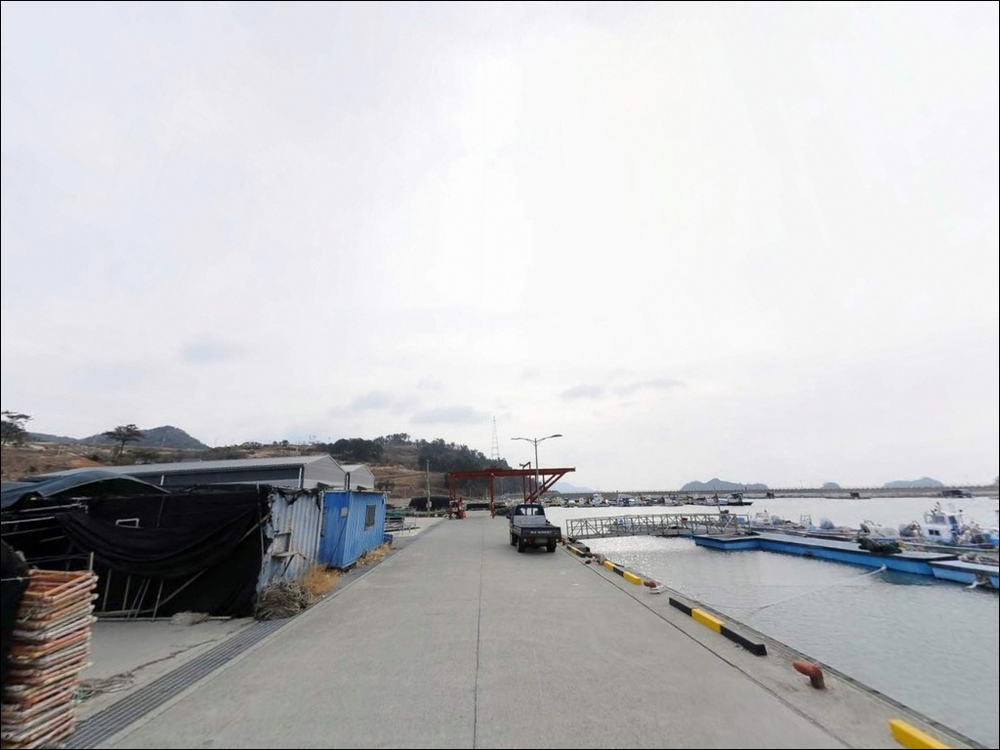
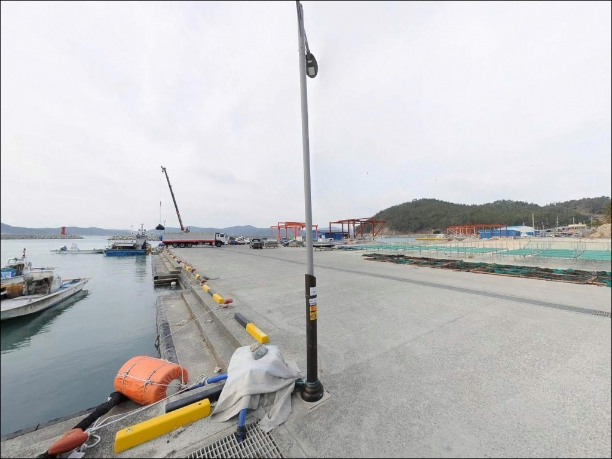

득암항, 득암방파제, 조약도 전남 완도군 힐링과 조과를 모두 잡는 바다 차박 낚시 명당
이 페이지에는 광고(제휴 링크 포함)가 있으며, 광고 링크를 통해 구매하면 운영자가 판매 수익 또는 수수료를 받을 수 있습니다. 포인트 사진: 카카오맵 스카이뷰·로드뷰. 이 페이지의 지도·사진 이미지는 카카오맵의 실제 서비스 이미지와 다를 수 있습니다.


포인트 안내
득암항(득암방파제)
전남 완도군 약산면 득암리 574-9
득암항(득암방파제)에서 가장 먼저 틀리는 판단은
주차 위치와 경사 방향입니다.
항구 접안부 인근에 경사 구간이 존재하며,
사이드브레이크를 체결하지 않은 차량이
바다로 밀린 사고가 실제로 발생한 이력이 있습니다.
낚싯대를 펴기 전에 주차 자리부터 점검하는 것이
이 포인트에서 가장 먼저 해야 할 일입니다.
완도군 약산면 조약도 북동부 해안에 자리한
득암항(득암방파제)은 동쪽 450m 큰 방파제와
서쪽 300m 작은 방파제를 갖춘 지방어항입니다.
방파제 외항 끝단은 수심이 급격히 깊어지는 구간으로
찌낚시·원투낚시·에깅을 동시에 운용할 수 있는
복합 낚시 포인트이기도 합니다.
이 글은 득암항(득암방파제)의
진입 환경, 주차 여건, 차박 체류 조건,
지형 기반 낚시 여건과 스타일별 공략법에 집중합니다.
조황 단정이나 특정 어종 보장은
이 글의 범위에 포함되지 않습니다.

1. 진입 동선과 조약도 내부 도로 여건
강진 방면에서 고금대교를 건너 고금면을 통과한 뒤,
약산대교를 건너면 조약도(약산도)에 진입합니다.
연육교 개통으로 차량 접근 자체는 어렵지 않으며,
약산연도교 이후 우두리사거리에서 우회전해
4km 직진하면 득암리에 닿습니다.
조약도 내부 도로는 편도 1차선 마을 도로 수준입니다.
급커브 구간이 포함되어 있어
대형 캠핑카나 트레일러를 운용할 경우
회전 반경을 미리 확인하는 편이 좋습니다.
일반 승용차와 중형 SUV 수준은
진입로 자체에는 큰 문제가 없습니다.
항구 내부는 부지가 갖춰져 있어 회차가 가능합니다.
공식 주차장이 접안부 인근에 조성되어 있으며,
방파제 입구 공터와 내항 복지회관 앞 공간도
주차 후보로 활용됩니다.
다만 접안부와 주차장 사이에 경사 구간이 있으므로
주차 후 차량 방향과 브레이크 상태를
반드시 확인해야 합니다.

2. 경사 주차 구간에서 차박을 안전하게 운용하는 조건
득암항(득암방파제)은 공식 주차장이 확인된 포인트입니다.
그러나 접안부 인근 경사 구간에서
2023년 12월 차량 해상 추락 사고가 발생한 이력이 있습니다.
완도해양경찰서는 경사 주차 시
사이드브레이크 체결과 고임목 사용을 공식 당부한 바 있습니다.
하룻밤 차박을 계획한다면
경사 방향과 수면과의 거리를 낮 시간에
먼저 파악해두는 것이 기본입니다.
야간 환경은 어항 수준의 기본 조명이 갖춰진 상태입니다.
항구 내 CCTV가 설치되어 있어
완전 암흑 환경은 아닙니다.
득암리 자체는 소규모 어촌 마을로
민가 밀집도가 낮은 편이며,
야간 통행도 거의 없어 차박 프라이버시는 양호합니다.
외항 방향은 남동풍에 직접 노출되는 구조입니다.
기상 악화 시 방파제 쪽으로 파도가 들이치는 상황이
발생할 수 있으므로,
낚시를 마친 뒤 차박에 들어가기 전
풍향과 풍속을 한 번 더 확인하는 편이 좋습니다.


3. 주변 편의시설 및 인프라 현황
득암항(득암방파제) 반경 1km 이내에
득암슈퍼가 위치합니다.
소규모 구멍가게 수준이므로
낚시 소모품이나 다량의 식재료 보충은
이 곳에서 해결하기 어렵습니다.
반경 10km권의 약산면사무소 인근에는
약국·식당·주유소 등 기본 생활 인프라가 모여 있습니다.
다만 조약도 내에서 완도읍내로 이동하려면
약산대교·고금대교를 역순으로 빠져나와야 하므로
거리 대비 이동 시간이 길어집니다.
출발 전 완도읍내 또는 고금면에서
식재료와 낚시 소모품을 완전히 갖추는 것이
현실적인 준비 방식입니다.
선상낚시를 목적으로 방문한다면
득암항(득암방파제)을 출항 기지로 운영하는
트윈스호(010-3162-6324)를 사전에 확인하는 것이 좋습니다.
방파제 워킹낚시와 선상낚시를
동일 출발 기점에서 선택적으로 운용할 수 있는
구조입니다.

4. 방문 전 반드시 챙겨야 할 준비사항
완도 조약도 일대는 조류 흐름이 형성되는 해역입니다.
득암항(득암방파제) 방파제 외항 방향은
외해 수로 구조와 연결되어
들물과 날물에 따라 조류 세기와 방향이 바뀝니다.
바다타임에서 득암리 기준 물때를 사전 확인하고,
들물 타이밍에 맞춰 입장하는 것이
이 포인트에서 유효한 기본 전략입니다.
방파제 외항 테트라포트 구간은
발판이 고르지 않습니다.
핀펠트 단화와 구명조끼는
테트라포트에 올라서는 순간부터 필수입니다.
기상 악화 예보가 있는 날은
외항 쪽 접근 자체를 삼가는 것이 원칙입니다.
어선 접·출항 시간대에는 방파제와 선착장 통행에 주의합니다.
어구(통발·그물)가 놓인 구역에는
낚시와 주차 모두 금하는 것이 기본 매너입니다.
출조 전 해당 해역 최신 조황은
직접 검색해 확인하는 편이 좋습니다.

5. 지형 기반 낚시 여건 분석
득암항(득암방파제)은 동쪽의 큰 방파제(약 450m)와
서쪽의 작은 방파제(약 300m)가
내항을 감싸는 구조입니다.
동쪽 큰 방파제 외측 전체에 테트라포트가 배치되어 있으며,
방파제 중간 꺾이는 지점부터 끝단까지가
이 포인트의 핵심 공략 구간입니다.
방파제 끝단 외항 방향은 수심이 급격히 깊어지는 구간으로,
간조 시에도 일정 수심을 유지합니다.
들물 이후 중들물 전후로 조류의 흐름이 강해지는 특성이 있어
이 타이밍에 채비 운용이 활발해집니다.
내항 쪽은 모래와 펄이 섞인 완만한 바닥 구조로
원투 채비의 밑걸림이 상대적으로 적은 편입니다.
방파제 외항 끝단은 수심이 급격히 깊어지는 구간으로
찌낚시와 원투낚시 모두 효과적인 자리입니다.
인접 해역(득암리·가사리·당목리 일대)은
수중여와 암초대가 혼재하는 전형적인 완도권 남해 지형으로,
선상낚시로 대형 감성돔이 꾸준히 기록되는 해역이기도 합니다.
워킹낚시 기준으로는 출조 전
약산도 일대 최신 조황을 반드시 검색해 확인하시기 바랍니다.


6. 포인트에 어울리는 낚시 스타일
이 포인트에서 가장 검증된 방식은
외항 테트라포트 구간을 활용한
릴찌낚시(반유동)입니다.
방파제 꺾이는 지점부터 끝단까지
수심 급변 구간이 형성되며,
이 일대 해역에서 기대해 볼 수 있는 어종은
감성돔·벵에돔으로 가을부터 겨울이 집중 시즌입니다.
원투낚시는 내항 선착장과 방파제 내측에서
폭넓게 운용할 수 있습니다.
모래·펄 혼합 바닥 구조로 밑걸림이 적어
초행길에도 채비 손실 없이 운용하기 좋은 환경입니다.
붕장어·도다리 계열이 기대 어종이며,
야간 원투가 이 포인트에서 잘 맞는 방식입니다.
에깅으로는 갑오징어·무늬오징어를 노려볼 수 있습니다.
방파제 발판과 선착장 슬로프가
에깅 캐스팅 자리로 활용되며,
약산도 일대는 갑오징어 워킹낚시 포인트로 알려진 해역입니다.
봄 산란기와 가을 시즌에 집중하는 것이 기본 전략입니다.
야간에는 내항 가로등 주변에서
볼락 라이트게임을 노려볼 수 있습니다.
소형 지그헤드 채비로 가로등 불빛 경계를
천천히 탐색하는 방식이 이 포인트에 어울립니다.
경사 주차 구간에서 사이드브레이크를 체결하지 않으면
차량 추락 위험이 현실적으로 존재하는 어항이므로,
야간 출조 전 주차 상태를 반드시 재확인하십시오.

7. 대안 포인트와 플랜 B 동선
득암항(득암방파제)에 바람이 강하게 불 때
첫 번째 대안은 가학항입니다.
가학항은 산등성이 지형이 바람을 막아주는 구조로,
외항 노출이 심한 날에 바람 영향을 줄이면서
낚시를 이어갈 수 있는 대피형 대안 포인트입니다.
같은 조약도 안에서 방파제 규모를 더 크게 잡고 싶다면
당목항(약 5km)이 유력한 대안입니다.
당목항은 2021년 국가어항으로 신규 지정된 어항으로
방파제 끝단 등대 주변 갯바위에서
감성돔 낚시 후기가 복수로 확인됩니다.
득암항(득암방파제)과 동일한 해역 조건을 공유하며,
배후 주차 부지도 넉넉한 편입니다.
원투낚시 위주로 조용하게 즐기고 싶다면
해동리 선착장도 대안이 됩니다.
규모가 작고 알려진 포인트가 아니라
사람이 몰리지 않는 편이며,
이 일대 해역 조건은 득암항(득암방파제)과
동일한 남해 다도해 패턴을 공유합니다.

주차부터 챙기면
득암항이 달리 보입니다
외항 테트라포트 끝단과 수심 급변 구간을 품은
득암항(득암방파제)은
찌낚시·원투·에깅·볼락 라이트게임을
한 자리에서 고를 수 있는 복합 포인트입니다.
선상낚시 출항지까지 겸하고 있어
워킹낚시와 선상낚시를 하나의 출발 기점에서
선택적으로 운용할 수 있다는 점도
이 포인트만의 조건입니다.
다만 경사 주차 구간과 차량 추락 사고 이력은
첫 방문이라면 반드시 숙지해야 할 현실 조건입니다.
낮에 주차 자리 경사도를 확인하고,
사이드브레이크와 고임목을 갖춘 뒤
낚시를 시작하는 것이 이 포인트에서
기본 중의 기본입니다.
반경 3km 이내 편의시설이 제한적이므로
완도읍내에서 사전 보급을 마친 뒤 들어오는 편이
현명한 출조 동선입니다.
에깅과 원투를 챙기고
물때 하나 맞춰 들어온 낚시인에게,
조약도 북동쪽 끝 방파제는
조용하고 단단한 하룻밤을 내어주는 포인트입니다.